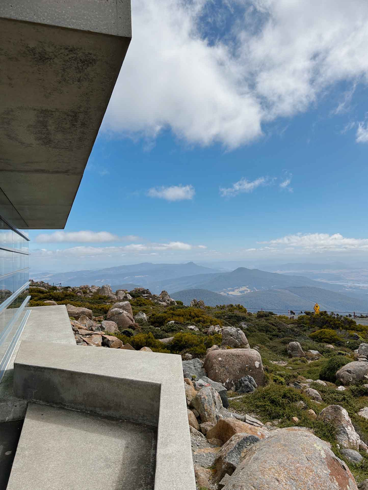

Hiking, surfing, food tours, zip lining, and so much more. Traveling in and around Australia provides endless possibilities and cultural experiences. Whether you like to relax on vacation or partake in a minute-by-minute itinerary, there is a place for you.
Travel Inside of Australia
Tasmania
Byron Bay
Hamilton Island
Tasmania
An island south of Australia with beautiful national parks, good farmers markets, and a lot of boating/sailing. A great place to hike and be outside in nature.

Flight: Virgin Australian flight from Sydney to Hobart international Airport (2 hr flight)
Accommodation: Mac Q01 Hotel
Favorites Activities:
Hobart Twilight Markets: Friday night market in the park. Good range of food vendors and live music!
Salamanca Markets: Saturday morning market in the park. Great mix of food and local vendors (jewelry, prints, souvenirs, etc)
Farm Gate Markets: Sunday morning near Urban Greek.
Cascade Brewery: If you like beer or cider this place is a must.
MONA (Museum of old and new art)
Mount Field National Park: Beautiful 1 ½ to 2 mile hike
Bonorong Wildlife Sanctuary- Tasmanian Devils!
Bruny Island Tour: We did a full day Bruny Island tour that included both food and sightseeing. We absolutely loved the one we did and found it to be an ideal way to see the whole the island. The food (oyster/cheese/bread/chocolate/honey) is amazing and you get to see all the iconic views of the island.
Favorite Restaurants:
Urban Greek: A Greek restaurant up the hill from the pier. The food is definitely good but it is a lot of food so make sure you go really hungry.
Bar Wa Izakaya: Japanese Tapas. Such a cool fun/quirky vibe with a great menu. The drinks were different but really good and it was just a happy place that I would definitely recommend going to. Make a reservation!
Van Diemen's Land Creamery, Hobart: Quite possibly the best ice cream I have ever had. Go and get the salted caramel.
Byron Bay
The most perfect place ever. I would have gone here every weekend abroad if I could have!
Flight: Jetstar from Sydney to Ballina Airport (Byron Bay) 1 ½ hrs
Accommodation: Julian’s Apartments
Luxurious: Elements of Byron / Raes is also very popular.
Favorite Activities:
Lighthouse walk: A must. This walk is quite challenging though so be prepared for a full-on hike. This hike would be so pretty at sunrise or sunset.
Kellin Falls- A beautiful waterfall 20 minutes from downtown Byron Bay. We rented a car to drive here and then went to the farm. It was definitely cool but not a must see.
Surf lessons: If you surf or have ever wanted to try surfing, this is the place to try!
Favorite Restaurants:
The Mez Club: Mediterranean tapas downtown! There is a limited menu but everything we tried was so good! You need a reservation!
Bayleaf and Combi: are both must-go to brunch places. The food is insane and they are right downtown. Go to both. (Also, I have heard that Folk is a great brunch spot but we didn’t make it there)
The Balcony Bar & Oyster Co: We didn’t end up making to this restaurant but heard it is a great place!
The Farm: A great place to spend a morning or afternoon. This place helps to break up a bunch of beach days in a row.
Raes: An extremely popular accommodation and restaurant for Aussies. We never made it here but I have heard it is a super popular place for breakfast and is steps from the beach. Definitely worth checking out.
Travel Outside of Australia
Thailand
New Zealand
Thailand
Thailand is such a beautiful and culturally diverse country. You definitely want to spend at least one full week traveling there. The most popular places that tourists visit are Bangkok, Koh Samui, Chiang Mai, Phuket, and Phi Phi Islands. You can’t really go wrong with any of them, it just depends on what you want out of the vacation.
Flight: Air Asia from Sydney to Bangkok (10 hr flight)
Accommodation: JW Marriott
Favorite Activities:
We did a half day boat tour around Samui where we went to a pig island, went “snorkeling” (but it was a cloudy day and even the reviews from the past say you don’t really see fish — we mainly went for pig island / the tour), we ate lunch on Koh Tan (a small island off of Samui), then ended by driving around the 5 little islands. Our tour guide Yai was so nice and we learned a lot about Samui which was cool. We used Happy Samui for the tour (they are on TripAdvisor but we found them through our hotel)
Thai Farm Cooking School (Chiang Mai) A must, especially if you like Thai food. Probably my favorite thing we did in Thailand. Do a half day tour and have them pick you up from your hotel. You get to go to the market then to their farm where you cook and prepare all of the food. Amazing experience and would 10/10 recommend (Pha was our head chef)
Favorite Restaurants:
Tawann (Koh Samui): A traditional Thai restaurant run by the hotel. It had pretty good pad Thai and stir fry but you can get the same if not better quality Thai food from the locals just down the road (a LOT cheaper too)
Katz Kitchen (Chiang Mai): Really good and authentic Thai food. It was super cheap and packed with people so we stopped for lunch and it was really good. Get a smoothie. They are amazing!!
Ginger & Kafe Restaurant (Chiang Mai): We came here for dinner and it was great! Super cool /pretty interior design all over the restaurant and the food was great Thai food with American food options too. Be careful with the salads though, they are spicy! There is also THE HOUSE by Ginger next door. I think it’s the same menu but just check before you make the reservation.
New Zealand
The most magical place on earth. If you have any desire at all to ever wander around in a camper van and move from spot to spot, this is the place to do it. One big recommendation I have is to prioritize seeing the South Island over the North Island!
Flight: JetStar from Sydney International Airport into Queenstown.
Accommodation: Hostels / airbnbs
Favorite Activities:
Speed boat in Skippers Canyon ($119 NZ Dollars): Worth it. Driving there was amazing and the boat was so cool. You zip through this amazing canyon.
Tiki trail to Ben Lomond hike: Ok so this is probably the most famous hike in Queenstown and it is absolutely beautiful but there are a few things you need to know. Also don’t go if you are not really into hiking and in decent shape 1. Prepare for a 6-7 hours/11 km round trip of intense hiking so bring snacks/water 2. It gets extremely cold at the top so pack layers 3. If you take the gondola up the mountain you can cut off the entire Tiki trail part, which was around a mile.
Queenstown trail: A much easier/primarily flat walk that goes around Lake Wakatipu. Beautiful views and accessible right from town.
Queenstown gondola/zipline: Huge attraction in Queenstown that was closed when we were there but was recommended to us by other people. I would get the three-day pass.
Milford Sound: So called “8th wonder of the world”. Around a four hr drive from Queenstown that is very scenic but definitely long. I would definitely drive or helicopter there instead of doing a tour bus. There are a few places to stop along the way but definitely stop in Te Anua, which is around the halfway point, and is the last rest stop/food place before 2 hrs of nothing. The Milford Sound itself was actually magical. We did a 2 hr boat cruise along the river and it was stunning. (Cruise Milford- definitely do one with less people)
Wanaka Lavender Farm: Beautiful farm with a cute shop and cafe that does honey tastings. It is about 10 minutes outside of Wanaka. It's in season around December- March so that is definitely the best time to go but we went in the off season and it was still fun. (They also have an alpaca :)
Mt. John Observatory/Dark Sky Project: Lake Wanaka is one of the best places to see the stars in the world. Definitely book a tour here or just drive to the middle of nowhere and look up.
Favorite Restaurants:
Patagonia Chocolate: Dessert!!! Get a sundae, the coffee one.
Vudu: Great breakfast but so crowded.
Arthurs: Easy sandwiches and wraps that are actually really good.
Fergburger: Hands down the best burger I have ever had. Go, go, go. (You might want to order online or go at an off hour because it gets so crowded. The bar, ice cream place and bakery are also amazing.)
Bespoke Kitchen: Another great breakfast place that is owned by the same owners of Vudu. Above town but a nice cozy place for breakfast or lunch (kitchen closes at 2 pm. We made that mistake lol)
Balls and Bangles: My first bagel sandwich abroad and it was surprisingly really good. They also have insane donuts. A good grab and go breakfast before getting on the road.